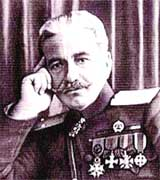

Antranik [Uzunyan] (1865-1927)

Osmanlý Devleti'ne karþý kýþkýrtýlan Ermenilerin çete reisliðini yapmýþ, defalarca devlete karþý savaþmýþtýr. Doðu Anadolu'da çýkartýlan Ermeni ayaklanmalarýnda, eylemlerin elebaþlarýndan olmuþ ve birçok insanýn katline sebep olmuþtur. Balkan Savaþý sýrasýnda, Bulgarlarýn safýnda Osmanlýlara karþý savaþmýþtýr. Birinci Dünya Savaþý sýrasýnda çekilen Rus birliklerinin boþalttýðý iþgal bölgelerinde eylemler gerçekleþtirmiþtir. Ýstanbul'a bölgeden gönderilen yazýlarda, Erzurum ve çevresinde öldürülen sivil insanlarýn baþ sorumlularýndan olduðu ifade edilmiþtir. Risâle-i Nur'da ismi dolaylý olarak zikredilmiþ; Enver ve Said Halim Paþalara yapýlan hücumlarýn, adeta Venizelos ve Antranik'e yapýlandan beter hale gelmesinin yanlýþlýðýna iþaret edilmiþtir.Antranik, 1865 yýlýnda Þebinkarahisar'da doðdu. Çocukluðu ise Ýstanbul'da geçti. Ýstanbul'da bir süre iþçi olarak çalýþtýktan sonra Doðu Anadolu'ya gitti. 1884 yýlýndan sonra hýzlanan Ermeni olaylarýna fiilen katýldý. 1885 yýlýnda kurulan ihtilâl hareketlerine katýlanlarýn ilklerinden oldu. 1890 yýlýnda babasý ile tartýþan bir Türkü öldürdü. Ermeniler tarafýndan çýkartýlan Sasun, Muþ ve Van bölgelerindeki isyanlara katýlarak Osmanlý Devleti'ne karþý savaþtý. 1901 yýlýndaki Muþ isyanýndan sonra, kendisi "Antranik Paþa" lâkabýyla anýlmaya baþlandý.
Osmanlý Devleti, 1901 yýlýnda Sasun idaresini düzene koymak için bazý faaliyetlere giriþti. Taluri ve Senik tepelerine kýþla yapma kararý aldý. Ermeniler ise buna karþý çýktýlar. Antranik yönetimindeki çetelerle silâhlý mücadeleye giriþtiler. 1903 yýlýnda, isyan hareketi daha geniþ bir alana yayýldý. 13 Nisan 1904 tarihinde isyancýlar üzerine asker sevk edildi. Askerler karþýsýnda tutunamayan isyancýlar daðýldýlar.
Sasun isyanlarý sýrasýnda iki kez kuþatýlan Antranik, devlet merkezinden zamanýnda taarruz emrinin gelmesi ve bölgenin de þartlarýnýn etkisiyle kuþatmadan kurtuldu. Kurtuluþunda, büyük devletlerin konsoloslarýnýn etkisi de oldu. Gizlice Van'a gitti. Burada da iki kez kaldýðý yer tesbit edildi. Fakat, tevkif emri gelmediðinden yakalanamadý. 1904 yýlýnda ise, isyanlar Sasun tepeleri, Muþ Ovasý ve Van'a kadar yayýldý. Bölgede bulunan Avrupa devletlerinin konsoloslarý, Hükümete Antranik ile uzlaþmayý teklif ettiler. Bu eylemler sýrasýnda Ermeni çetecileri toplanýp Antranik'i kumandan seçtiler. Bu çatýþmalar sýrasýnda çok sayýda insan hayatýný kaybetti.
Ermeni olaylarýnda aktif bir þekilde rol alan ve isyanlarda bulunarak bunlarý idare eden Antranik, 1905 yýlýnda Bulgaristan'a geçti. Taþnak Partisi'nin faal bir üyesi olarak, Baðýmsýz Ermenistan Devleti'nin kurulmasý için yapýlan faaliyetlere iþtirak etti. Ancak, bu partiyle uzun bir süre çalýþamadý. 1907 yýlýnda gerçekleþen partinin genel kurulunda, parti yönetimiyle anlaþamadýðýndan, ayrýldý. II. Meþrûtiyet'in ilanýndan sonra, Osmanlý Meclisi'ne Ermeni milletvekilliði için teklif edildiyse de kabul edilmedi.
Osmanlý Meclisi'ne kabul edilmeyen Antranik, aralarýnda Ýngiltere, Ýsviçre ve Fransa'nýn da bulunduðu Avrupa devletlerini dolaþtý. Daha sonra Bulgaristan'a geri döndü. 1912 yýlýnda baþlayan ve Osmanlý Devleti'ne karþý dört Balkan ülkesinin ittifak ederek katýldýðý Balkan Savaþý'na katýldý. Bu savaþta, Bulgar Ordusu'nda bulunarak savaþa katýldý. Bulgar subayý olarak görev yaptý.
Antranik, Birinci Dünya Savaþý'nýn 1914 yýlýnda baþlamasý üzerine Rusya'ya geçti. Tiflis'de teþekkül ettirdiði çete teþkilâtýyla birlikte Rus Ordularý safýna katýldý. Ruslarla birlikte Osmanlýlara karþý savaþtý. Sovyet ihtilâlinden sonra kendisine, "general" unvaný verildi. 1918 yýlýndan itibaren Kafkasya bölgesinde bulunan Ermenilerin idaresini yürüttü. Rus ihtilâli sonrasýnda Birinci Dünya Savaþý'ndan çekilen Ruslarýn boþalttýðý Erzurum'da Türklere karþý savaþmaya devam etti. Burada bulunan Ermeni birliklerinin komutanlýðýný yaptý. Ancak, Osmanlý Askerleri karþýsýnda bir varlýk gösteremeden geri çekildi. Birlikleri daðýldýðý gibi, kendisi de Rusya'ya kaçtý.
Sovyet yönetiminden beklediði ilgiyi göremeyen Antranik, Erivan'a geçti. Kâzým Karabekir Komutasý'ndaki kuvvetlere karþý maðlûp olan Ermenistan, savaþtan çekilmek zorunda kalmýþtý. Türk Devleti ile sulh yapan Ermenistan her türlü askeri hareketi durdurduðu halde, Antranik, bir gönüllü çetesinin baþýna geçerek faaliyetlerini devam ettirdi. Bir çok Müslümaný katlederek eylemlerini sürdürdü. Bunun üzerine, Ermenistan Hükümeti, kendisinden çetesini daðýtmasýný istedi. Ermeni birliklerini daðýtarak silâhlarýný teslim etti. Daha sonra Erivan'dan Tiflis'e geçti. Buradan Avrupa'ya oradan da Amerika'ya gitti.
1922 yýlýnda gittiði Amerika'da ölümüne kadar, yani 1927 yýlýna kadar yaþadý. Ölümünün üzerinden bir yýl geçtikten sonra, 1928'de kemikleri mezarýndan alýnarak Paris'e götürüldü ve burada yeniden gömüldü. 1965 yýlýnda, doðumunun yüzüncü yýldönümü sebebiyle, Ermeniler tarafýndan bir çok yerde anýldý. Sovyetler Birliði bünyesinde bulunan Ermenistan'daki bir kasabaya Þebinkarahisar adý verildi ve buraya heykeli dikildi. 1999 yýlýnda ise Ermenistan'da Antranik için gümüþ hatýra paralarý ve kartpostallar bastýrýldý, Erivan'a heykeli dikildi. 15 Þubat 2000 yýlýnda ise, Paris'teki mezarý buradan Erivan'a getirtildi ve devlet töreniyle yeniden gömüldü.
Birinci Dünya Savaþý'ndan maðlûp olarak çýkan Osmanlý Devleti çok aðýr þartlar ihtiva eden Mondros Mütarekesi'ni imzalamak zorunda kalmýþtý. Bu arada Ýttihat ve Terakki'nin ileri gelenleri yurt dýþýna kaçmýþlardý. Ýstiklâl Harbi'nin baþladýðý sýralarda "Sünûhat" adlý eserini kaleme alan Bediüzzaman; Ýttihat ve Terakki erkânýna, Enver, Said Halim paþalara çok þiddetli hücumlarýn yapýldýðýna þahit oldu. Daha önce, Ýttihat ve Terakki politikasýný sert bir þekilde eleþtiren Bediüzzaman, söz konusu saldýrýlar üzerine onlarýn yanýnda yer aldý. Çünkü, devletin idaresinde belli bir süre kaldýktan sonra, ayrýlmýþ bulunan ve savunmasýz kalan bu insanlara yapýlan hücumlar, yýllarca devlete karþý savaþan isyancýlara karþý takýnýlan tavýrdan farksýzdý.
"Ýttihada þedit bir muarýzdýn. Neden þimdi sükût ediyorsun" þeklindeki soruya, "Düþmanlarýn onlara þiddet-i hücumundan. Düþmanýn hedef-i hücumu, onlarýn hasenesi olan azim ve sebattýr ve Ýslâmiyet düþmanýna vasýta-i tesmim olmaktan feragatýdýr" diyerek cevap veren Bediüzzaman, söz konusu hücumlarýn düþmanýn iþine yaradýðýna iþaret etti. "Bence yol ikidir: mizanýn iki kefesi gibi. Birinin hiffeti, ötekinin sýkletine geçer. Ben tokadýmý Antranik ile beraber Enver'e, Venizelos ile beraber Said Halim'e vurmam. Nazarýmda vuran da sefildir." (Sünûhat, s. 67-68) diyerek tavrýný net bir þekilde ortaya koydu.